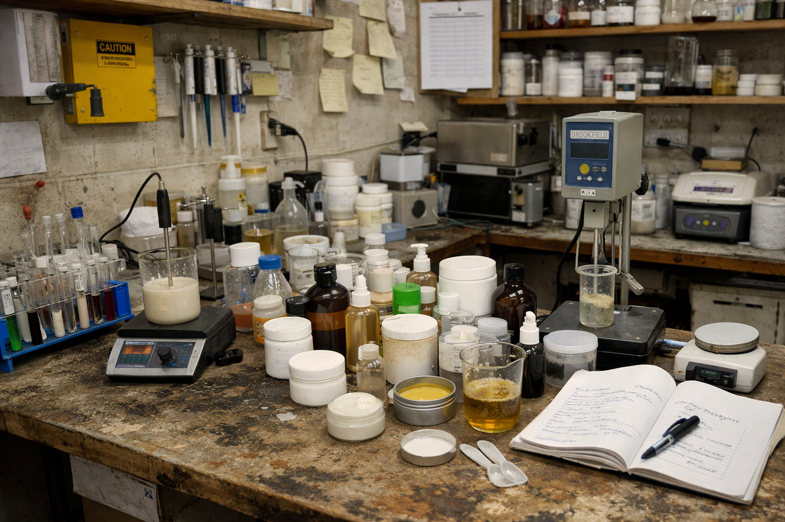

Since 1999, Agrinova Group of Companies has maintained the highest quality control standards for all agricultural products distributed across Pakistan. Every insecticide, fungicide, weedicide, and fertilizer undergoes rigorous laboratory testing before reaching Pakistani farmers.

At Agrinova Group of Companies, quality control is not just a process — it is our promise to farmers across Pakistan. Our dedicated quality control department ensures that every agricultural product in our 200+ product portfolio meets strict physical, chemical, and biological standards before distribution to dealers and farmers nationwide.
Product samples are collected at multiple stages — from raw material sourcing to final packaging — and tested in a modern laboratory environment. This ensures that every bottle, bag, or granule of our insecticides, fungicides, weedicides, and fertilizers delivers consistent and reliable performance in the field.
Every agricultural product at Agrinova Pakistan goes through a strict multi-step quality control process before it reaches farmers across Pakistan.
All raw materials for insecticides, fungicides, and fertilizers are inspected and verified upon arrival at our facility.
Samples are tested in our modern laboratory for physical properties, chemical composition, and concentration accuracy.
Each production batch undergoes detailed analysis to ensure consistency, safety, and effectiveness across all units.
Final products are inspected for correct labeling, packaging integrity, and compliance with Pakistan agricultural standards.
Only products that pass all quality checks are approved for distribution to dealers and farmers across Pakistan.
Our commitment to quality control protects Pakistani farmers, their crops, and the environment — ensuring sustainable and profitable agriculture across Pakistan.
Every product is tested to ensure safe handling and application for farmers across Pakistan.
Modern laboratory equipment ensures accurate chemical and physical analysis of all products.
Batch-level quality control guarantees the same reliable performance in every product.
Our quality process ensures products meet environmental safety standards for sustainable farming.